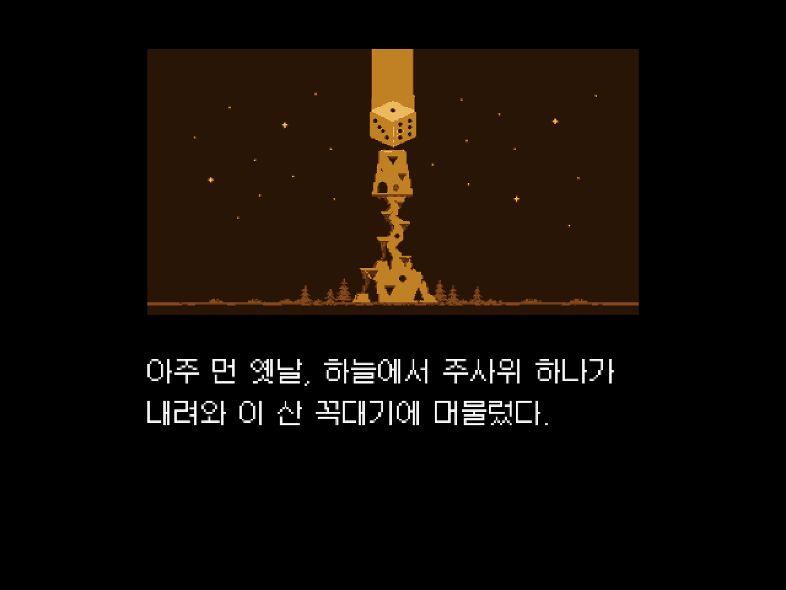
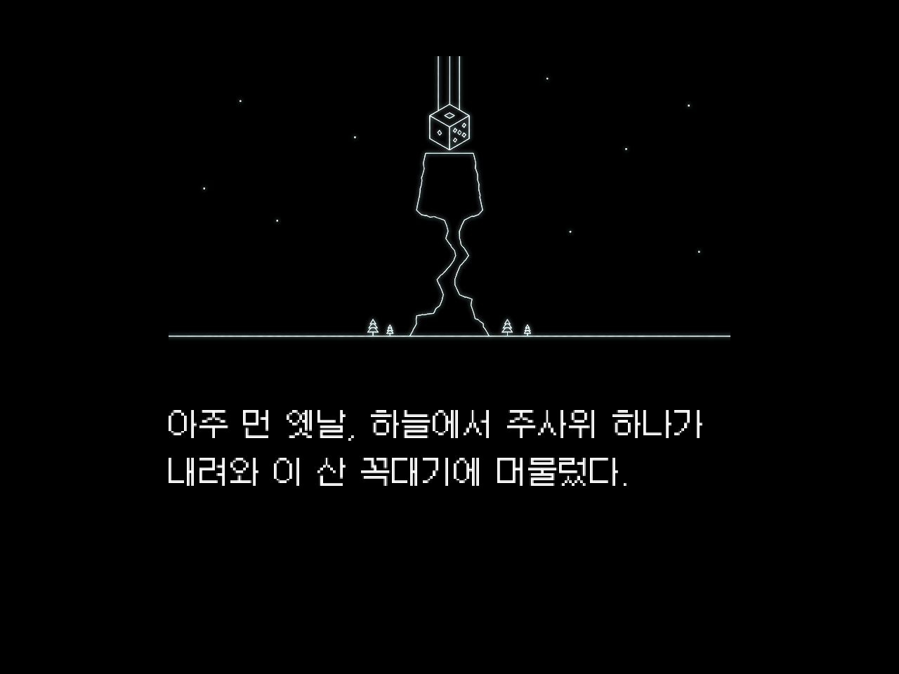
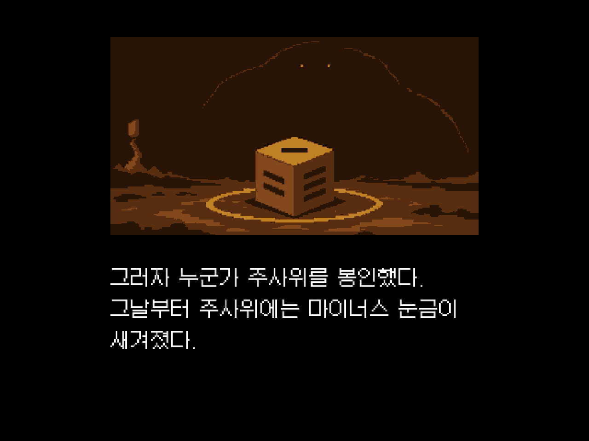
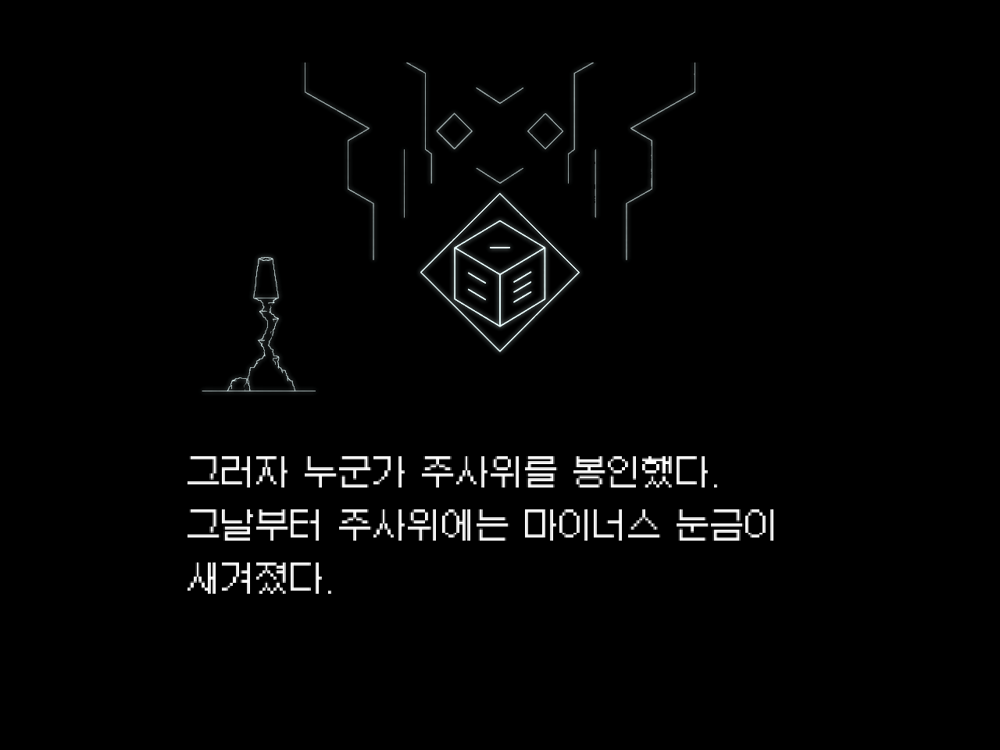

뮤노폴리 인트로 — A안 · 하늘에서 온 주사위
위 탭으로 그림체를 바꿉니다. 문장은 두 그림체가 같습니다. 소리는 없습니다.
이어 보기 영상
컷 넘겨 보기
그림체 비교 — 1 · 3컷 나란히




벡터 선화 레퍼런스: user/donghyun/art-references/vector-20260914 · vector-animals-20260914 (9/14 조사) + 쇠똥구리 영상판